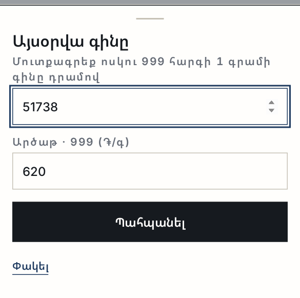
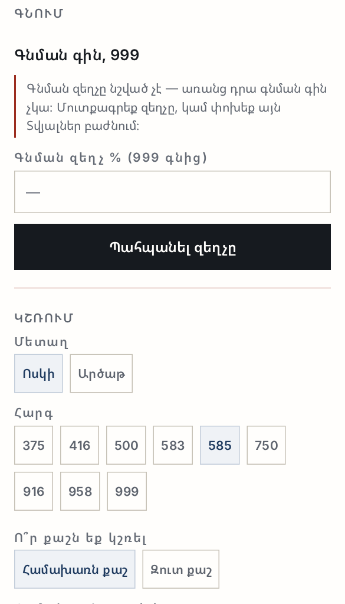
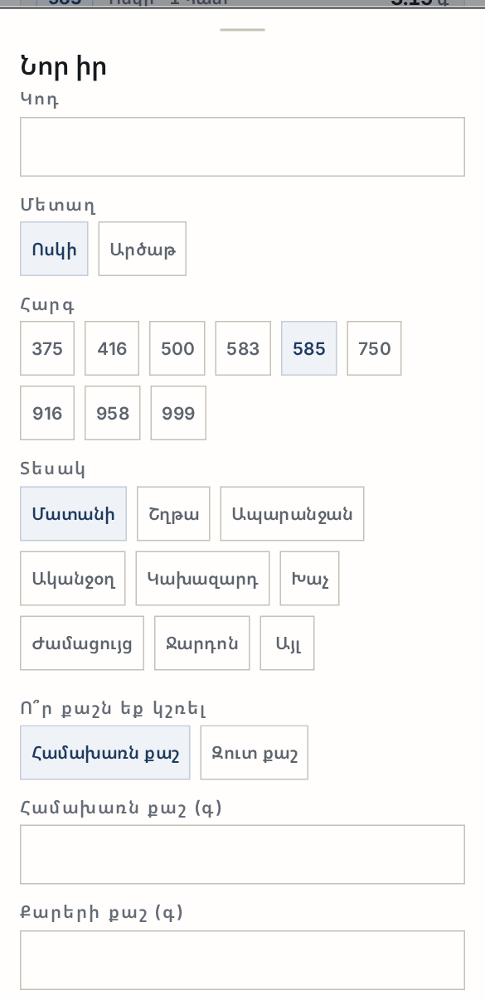
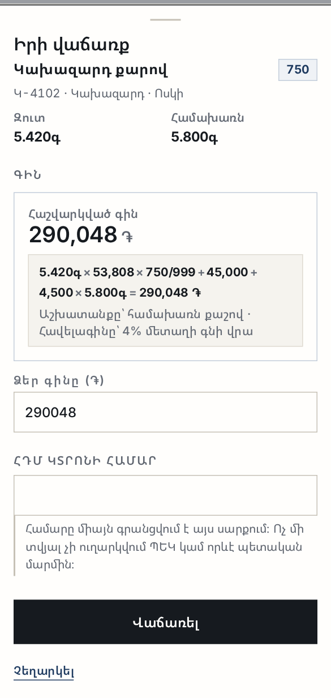
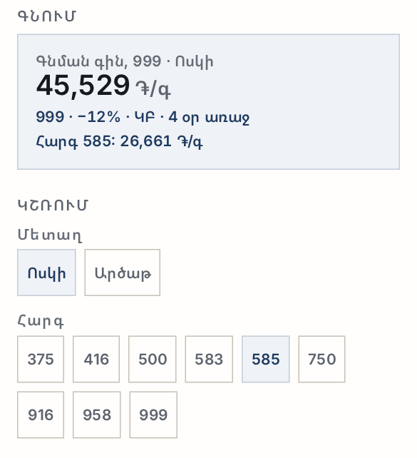
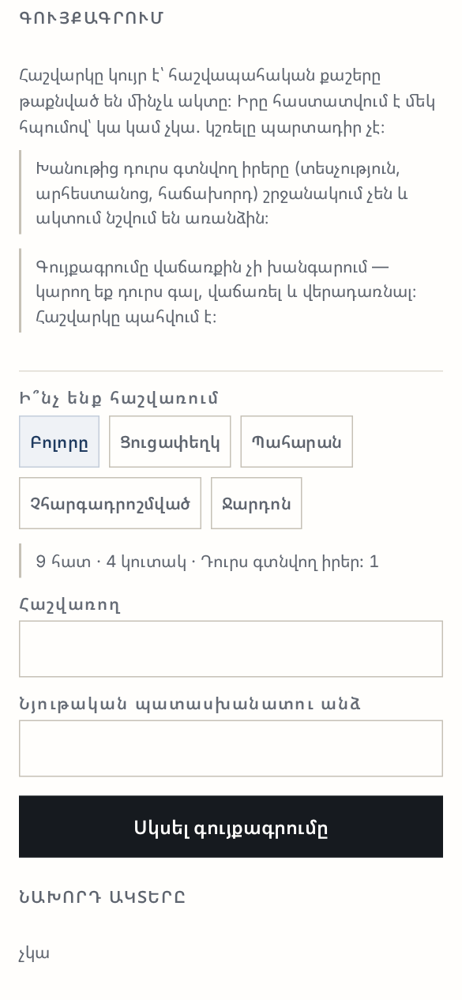
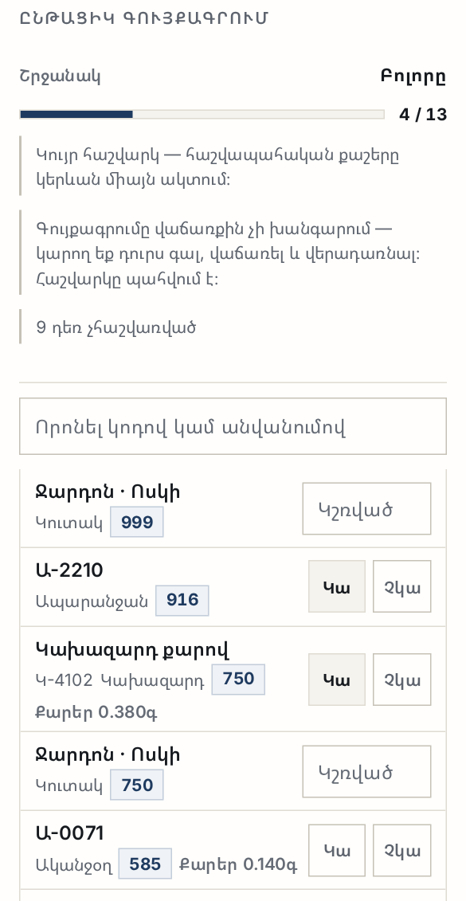
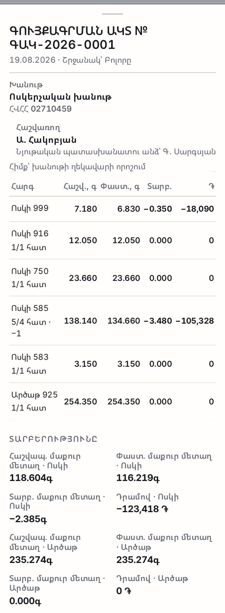
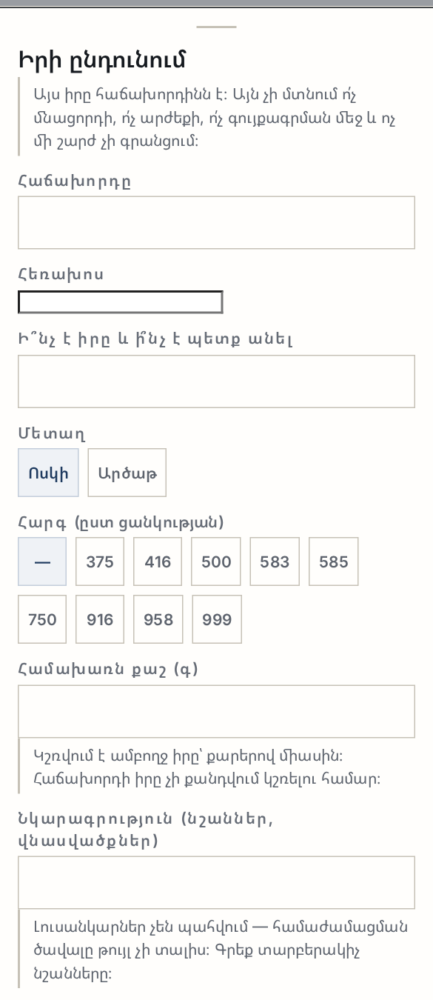
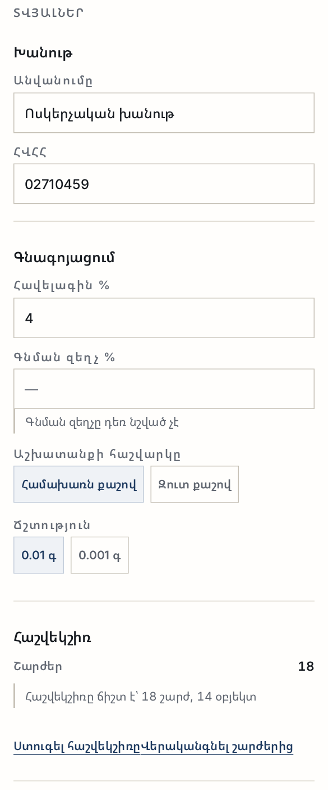

ԱրմՈսկի
Ուղեցույց
Ոսկերչական խանութի հաշվառում՝ քաշով և հարգով։ Այս ուղեցույցը ցույց է տալիս ամեն քայլը՝ իսկական էկրաններով։
Բացվում է ցուցադրական տվյալներով — կարող եք ամեն ինչ սեղմել առանց վախի։
Ինչպես կարդալ այս ուղեցույցը
Ուղեցույցը հետևում է խանութի օրվան՝ գինը դնելուց մինչև գույքագրման ակտը։ Ամեն բաժինը կարելի է կարդալ առանձին։ Բոլոր նկարներն արված են աշխատող ծրագրից՝ ցուցադրական տվյալներով, ուստի կարող եք բացել ծրագիրը կողքից և կրկնել քայլերը։
Տասը էկրան
Ներքևի գիծը ցույց է տալիս այնքան էկրան, որքան տեղավորվում է հեռախոսի լայնության մեջ. մնացածը՝ «Ավելին» կոճակի տակ։
- Այսօր — օրվա գինը, դարակի արժեքը, օրվա մուտքն ու ելքը, ուշադրության կարիք ունեցող իրերը։
- Վաճառք — իր գտնել, գին ստանալ, վաճառել։
- Գնում — գնում բնակչությունից և գնման ակտը։
- Դարակ — մնացորդը՝ ըստ հարգի, մաքուր մետաղով ընդհանուր։
- Գույքագրում — կույր հաշվարկ և գույքագրման ակտ։
- Ընդունում — մատակարարից ընդունում։ Այս էկրանը դեռ կառուցված չէ։
- Հարգադրոշմ — տեսչություն հանձնելու շրջափուլը։
- Պարտքեր — մատակարարների մնացորդները։
- Վերանորոգում — հաճախորդի իրերի պահպանության մատյան։
- Տվյալներ — խանութը, գնագոյացումը, ճշտությունը, թեման, լեզուն, գաղտնիությունը։

1 · Օրվա գինը
Ամեն ինչ սկսվում է մեկ թվից՝ 999 հարգի մեկ գրամի գինը դրամով։ Մնացած բոլոր հարգերը ծրագիրն ինքն է հաշվում՝ մետաղի պարունակությամբ։ Դուք մեկ թիվ եք պահում, ոչ թե աղյուսակ։
- Բացեք Այսօր և սեղմեք «Փոխել գինը»։
- Մուտքագրեք ոսկու 999 գինը։ Եթե արծաթ էլ եք պահում, մուտքագրեք նաև արծաթի 999 գինը։
- Սեղմեք «Պահպանել»։ Կարտի վրա հայտնվում է թիվը, աղբյուրը և տարիքը՝ «ԿԲ · 23 ժ առաջ»։

Հավելագին և գնման զեղչ
Տվյալներ → Գնագոյացում բաժնում երկու թիվ կա։ Հավելագինը ձեր վաճառքի հավելումն է մետաղի գնի վրա։ Գնման զեղչը այն է, թե որքանով եք ցածր գնում ջարդոնը 999 գնից։

2 · Նոր իր՝ համախառն, քարեր, զուտ
Դարակ → «+ Նոր իր»։ Ձև, որը լրացվում է վերևից ներքև՝ կոդ, մետաղ, հարգ, տեսակ, ապա քաշերը։

Ո՞ր քաշն եք կշռել
Ծրագիրը հարցնում է՝ համախառն քաշն եք դրել կշեռքին, թե զուտ-ը։ Դուք մուտքագրում եք երկուսից մեկը և քարերի քաշը, երրորդը ածանցվում է և կողպվում։ Ընտրությունը պահվում է, որովհետև հետագա վեճը հենց այդ թվի շուրջ է լինում։
Աշխատանքը և ինքնարժեքը
- Աշխատանքը գրվում է մեկ գրամի դրամով, ոչ թե իրի համար։
- Ինքնարժեքը այն է, ինչ դուք վճարել եք այդ իրի համար, և ինչ փաստաթղթով։ Դա ամենակարևոր դաշտն է ամբողջ ծրագրում։
- Եթե ինքնարժեքը հայտնի չէ, իրը միևնույն է ավելանում է դարակին և վաճառվում է։ Բայց նրա կողքին գրվում է «Ինքնարժեք չկա» — կարմիրով, պարզ գրառում առանց շրջանակի, և «Այսօր» էկրանը դա հաշվում է։
Ո՞ւր է ընկնում նոր իրը
Դարակ էկրանը խմբավորում է ամեն ինչ ըստ հարգի. պատրաստի իրերը և ջարդոնի կուտակները միասին։ Տարբեր հարգերի գրամները երբեք չեն գումարվում — ընդհանուրը տրվում է մաքուր մետաղով, և արժեքի տակ գրված է հենց այն բազմապատկումը, որով ստացվել է։

3 · Վաճառք և 80%-ի զգուշացումը
Վաճառք էկրանում գտեք իրը կոդով կամ անվանումով և սեղմեք վրան։ Բացվում է վաճառքի թերթիկը՝ հաշվարկված գնով և հաշվարկի տողով։

Կարող եք ձեր գինը գրել «Ձեր գինը» դաշտում։ Այդ պահից ծրագիրն այլևս չի վերագրում ձեր թիվը։ Հաշվարկվածին վերադառնալու կոճակը միշտ կողքին է։
Ի՞նչ է նշանակում 80%-ի զգուշացումը
Երբ ձեր գինը իջնում է հաշվարկվածի 80%-ից ցածր, հայտնվում է կարմիր զգուշացում՝ երեք թվով. հաշվարկվածը, դրա 80%-ը և ձեր գինը։

Ներքևում կա ՀԴՄ կտրոնի համարի դաշտ։ Այն միայն գրանցվում է այս սարքում. ծրագիրը ոչ մի տվյալ ոչ մի տեղ չի ուղարկում։
4 · Գնում բնակչությունից և գնման ակտը
Սա այն հոսքն է, որի համար ամբողջ ծրագիրը կառուցված է։ Վաճառասեղանի մոտ եկած մարդը կոտրված շղթա է բերել։
- Եթե գնման զեղչը դեռ նշված չէ, էկրանը սկսվում է դրանով։ Առանց զեղչի գնման գին չկա։
- Ընտրեք մետաղը և հարգը։
- Դրեք իրը կշեռքին և մուտքագրեք քաշը։ Քարեր լինելու դեպքում մուտքագրեք նաև դրանց քաշը։
- Ցույց տվեք հաշվարկի տողը հաճախորդին։ Այնտեղ երևում է 999 գինը, հարգի փոխարկումը, քաշը և արդյունքը։
- Ընտրեք վճարման եղանակը՝ կանխիկ կամ փոխանցում։
- Լրացրեք վաճառողի տվյալները, եթե պետք է։ Այս դաշտերը ըստ ցանկության են։
- Ընտրեք՝ մետաղը ջարդոն է դառնում, թե գնում է վերավաճառքի։
- Սեղմեք «Վճարել և կազմել ակտը»։


Գնման ակտը
Ակտը կազմվում է անմիջապես՝ համարով, ամսաթվով, կողմերով, աղյուսակով, գումարը հայերեն բառերով, վճարման եղանակով և երկու ստորագրության տողով։ «Տպել» կոճակը տպում է հեռախոսից։

5 · Հարգադրոշմի հանձնում
Հարգորոշումն ու հարգադրոշմավորումը կատարում է լիցենզավորված տեսչությունը, ոչ թե ոսկերիչը։ Ուստի այս էկրանը հարգորոշման արդյունք չի գրանցում — այն վարում է հանձնման շրջափուլը։
- Հանձնման ենթակա — ինչը դեռ խանութում է և դրոշմ է սպասում։ «Ընտրել» → հանձնման ցուցակ։
- Տեսչությունում — ինչ է դուրս և քանի օր։
- Վերադարձած — ինչ է վերադարձել և երբ։
- Հարգադրոշմ չի պահանջվում — ազատված իրերը, ազատման պատճառով։

Ազատումը ծրագիրն ինքն է հաշվում՝ ոսկին 1.5 գ-ից թեթև, արծաթը 3 գ-ից թեթև, ջարդոնը, ինչպես նաև արդեն դրոշմված իրերը։ Այդ իրերի բացակայող դրոշմը սխալ չէ և էկրանին սխալի պես չի երևում։
6 · Գույքագրում և ակտը
- Ընտրեք շրջանակը՝ Բոլորը, Ցուցափեղկ, Պահարան, Չհարգադրոշմված կամ Ջարդոն։ Էկրանը ցույց է տալիս, թե քանի հատ և քանի կուտակ է մտնում շրջանակի մեջ։
- Գրեք հաշվառողի և նյութական պատասխանատու անձի անունները։ Դրանք գնում են ակտի ստորագրության բլոկ։
- Սեղմեք «Սկսել գույքագրումը»։

Կույր հաշվարկ
Հաշվապահական քաշերը թաքնված են, մինչև ակտը կազմվի։ Դա դիտավորյալ է. եթե թիվը երևա, ձեռքն ինքն է գնում այդ թվին։ Իրը հաստատվում է մեկ հպումով՝ «Կա» կամ «Չկա». կշռելը պարտադիր չէ, նրա քաշն արդեն հայտնի է։ Ջարդոնի կուտակը դրվում է կշեռքին և կշռվում։

- Գույքագրումը վաճառքին չի խանգարում։ Կարող եք դուրս գալ, վաճառել և վերադառնալ. հաշվարկը պահվում է։
- Խանութից դուրս գտնվող իրերը (տեսչությունում, արհեստանոցում, հաճախորդի մոտ) շրջանակում չեն և ակտում նշվում են առանձին։ Այլապես հանձնված մատանին կերևար որպես պակասորդ։
- Հաճախորդի իրերը ևս առանձին բլոկում են՝ քանակով և ընդհանուր քաշով։
Ակտը
«Ավարտել և կազմել ակտը» սեղմելուց հետո ծրագիրը ցույց է տալիս ամեն հարգի համար՝ հաշվապահական քաշը, փաստացի քաշը, տարբերությունը գրամով և հատով, և տարբերության արժեքը դրամով։

7 · Վերանորոգում
Վերանորոգում → «+ Ընդունել իր»։ Գրանցում եք հաճախորդին, իրը, քաշը, հարգը, ժամկետը և գինը։ Կարգավիճակները երեքն են՝ Ընդունված → Պատրաստ → Հանձնված։

Իրն ընդունելիս և հետ հանձնելիս տպվում է անդորրագիր՝ երկու օրինակից, մեկական կողմերին։ Անդորրագրի վրա գրված է, որ իրը մնում է հաճախորդի սեփականությունը։
8 · Պարտքեր մատակարարներին
Ավելացնում եք հաշիվները և գրանցում վճարումները։ Մնացորդը երբեք չի պահվում որպես թիվ — այն ամեն անգամ հաշվարկվում է երկու մատյանից՝ հաշիվների գումարը մինուս վճարումների գումարը։ Դրա համար էկրանի թիվը և տողերը չեն կարող իրար հակասել։
Ամեն մատակարարի համար կարելի է տպել քաղվածք՝ հաշիվների և վճարումների ցուցակով և մնացորդով, երկու օրինակից։ Տվյալները վերցվում են միայն այս սարքի մատյաններից։
9 · Կարգավորումներ, որոնք դիտավորյալ դատարկ են
Բոլորը Տվյալներ էկրանում են։ Մի քանիսը դատարկ են ուղարկվում, և դա սխալ չէ։

- Գնման զեղչ % — դատարկ է։ Ոչ մի աղբյուր չի ասում, թե երևանյան խանութը որքան զեղչով է ջարդոն գնում. դա ձեր թիվն է։ Սխալ լռելյայն թիվը վատ է սխալ ուղղությամբ. այն կերևար ճիշտի պես։ Առանց զեղչի ծրագիրը պարզապես գնման գին չի ցույց տալիս։
- Արծաթի 999 գինը — դատարկ է, քանի դեռ արծաթ չեք պահում։ Այն ձեռքով է մուտքագրվում։
- Աշխատանքի հաշվարկը՝ համախառն, թե զուտ քաշով։ Լռելյայն համախառն է, որովհետև աշխատանքն արվել է ամբողջ իրի վրա։ Բայց դա ընտրություն է, ոչ թե փաստ — դրա համար էլ կարգավորումը կա, և ամեն հաշվարկի տողի տակ գրված է, թե որ քաշն է օգտագործվել։
- Ճշտություն՝ 0.01 գ, թե 0.001 գ։ Պահվում է միշտ երեք նիշով. կարգավորումը փոխում է միայն ցուցադրումը։
- Հարգադրոշմի հիշեցման օրերը ձեր շեմն է, ոչ թե տեսչության ժամկետը։ Ծրագիրը տեսչության ժամկետների մասին ոչինչ չի պնդում։
- Հարկի դրույքաչափ ընդհանրապես չկա։ Ծրագիրը հարկ չի հաշվարկում և ռեժիմ չի ընտրում։ Այն վարում է այն գրառումը, որի վրա հարկը հենվում է՝ ինքնարժեքը, փաստաթուղթը և ամսաթիվը։
Հաշվեկշիռը
«Հաշվեկշիռ» կարտը ցույց է տալիս շարժերի քանակը և ասում է, արդյոք մնացորդը համընկնում է շարժերի գումարի հետ։ «Ստուգել» վերստուգում է. «Վերականգնել շարժերից» վերահաշվում է մնացորդը ամբողջ պատմությունից։ Այս երկուսը ձեզ պետք չեն ամեն օր, բայց լավ է իմանալ, որ կան։
10 · Ի՞նչ դեռ չկա
- «Ընդունում» էկրանը կառուցված չէ։ Մատակարարից ընդունումը քաշերով և ինքնարժեքով դեռ չի աշխատում. էկրանը բացվում է և հենց այդպես էլ գրում է։
- Սարքերի միջև համաժամացում չկա։ Տվյալները մնում են այն սարքում, որտեղ մուտքագրվել են։
- Լուսանկարներ չկան։ Իրի նկար չի պահվում. կա տեքստային նշում։
- CSV արտահանում չկա։
- ՀԴՄ-ի հետ կապ չկա և չի լինելու։ Կտրոնի համարը գրանցվում է որպես հղում, և ոչինչ ոչ մի տեղ չի ուղարկվում։
11 · Տվյալները և գաղտնիությունը
- ԱրմՈսկին ոչ մի տվյալ չի ուղարկում ՊԵԿ կամ որևէ պետական մարմին։ Ամեն ինչ մնում է այս սարքում։
- Տվյալները պահվում են ARMGOLD-ից առանձին։ Երկուսը տարբեր ծրագրեր են. մեկում մուտքագրվածը մյուսում չի հայտնվում։
- Ծրագիրը բացվում է առանց ինտերնետի։ Կարող եք այն ավելացնել հեռախոսի էկրանին և բացել ինչպես սովորական ծրագիր։
- Քանի որ համաժամացում չկա, սարքը կորցնելը տվյալները կորցնել է։ Կարևոր փաստաթղթերը տպեք։
Բոլոր էկրանների նկարներն արված են աշխատող ծրագրից՝ ցուցադրական տվյալներով, հայերեն տարբերակից։ Ծրագիրն ինքը երեք լեզվով է։